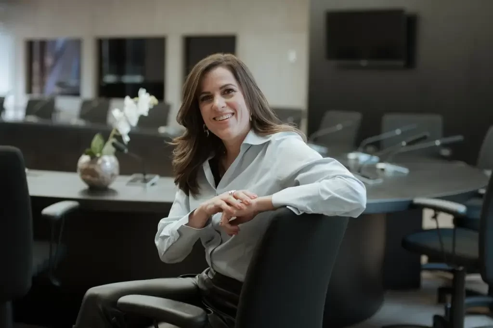

Educação social é alavanca para desenvolvimento, diz líder do Dom Serafim
A educação social é um dos pilares da estratégia da Fundação Dom Cabral, ao lado da educação acadêmica e executiva. E, ao longo dos 46 anos da escola de negócios, mais de 15 mil pessoas e 273 organizações sociais já foram atendidas por meio de iniciativas voltadas para jovens em situação de vulnerabilidade, empreendedores populares e organizações. A nova líder do braço social da instituição, o FDC – Centro Social Cardeal Dom Serafim, Ana Carolina Almeida, tem agora a missão de ampliar essas ações para todo o país e levar a experiência da instituição, que está na nona posição dentre as escolas de negócios participantes do ranking de Educação Executiva do jornal inglês Financial Times.